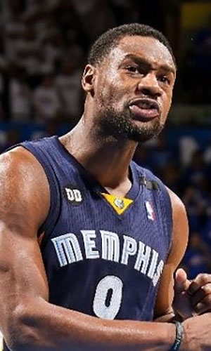

|  |
Матчи |
63 |
|
Передачи (всего/среднее) |
86 |
1.4 |
| В основе |
41 |
|
Подборы в защите (всего/среднее) |
177 |
2.8 |
| Время (всего/среднее) |
1647:43 |
26:09 |
Подборы в атаке (всего/среднее) |
103 |
1.6 |
| Очки (всего/среднее) |
539 |
8.6 |
Подборы (всего/среднее) |
280 |
4.4 |
| 2-очковые броски (всего/среднее) |
215/426 |
3.4/6.8 |
Перехваты (всего/среднее) |
128 |
2 |
| 2-очковые броски (% реализации) |
50.5% |
|
Потери (всего/среднее) |
86 |
1.4 |
| 3-очковые броски (всего/среднее) |
10/29 |
0.2/0.5 |
Блокшоты (всего/среднее) |
30 |
0.5 |
| 3-очковые броски (% реализации) |
34.5% |
|
Блокшоты соперника (всего/среднее) |
52 |
0.8 |
| Штрафные броски (всего/среднее) |
79/126 |
1.3/2 |
Фолы (всего/среднее) |
166 |
2.6 |
| Тони Аллен |
Штрафные броски (% реализации) |
62.7% |
|
Коэффициент полезности (всего/среднее) |
482 |
7.7 |